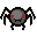
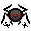
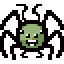
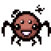
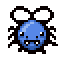
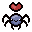

Появляется шанс выстрелить белой слезой, которая может замедлить врага.

В голове персонажа появляется паук, который стреляет 4 замедляющими слезами в дополнение к обычным слезам персонажа.
При получении урона, есть шанс, что голова персонажа лопнет, создав синих пауков и выпустит спутника, который прыгает на врагов и стреляет по ним слезами.
Спутник возвращается в голову при входе в новую комнату.

Персонаж стреляет четырьмя слезами за раз.

При убийстве врага появляется один синий паук.
Синий паук не появится, если враг был убит синим пауком или окружением.

Увеличивает размер и наносимый урон союзных синих мух, синих пауков и Контент добавленный в DLC: Afterbirth + саранчи в 2 раза.
Контент, добавленный в DLC: Repentance Также действует на всех паучих и мушиных спутников.

При получении урона создаёт 3-5 синих пауков.